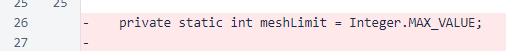
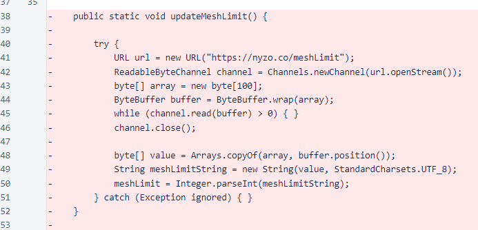
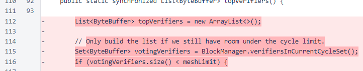
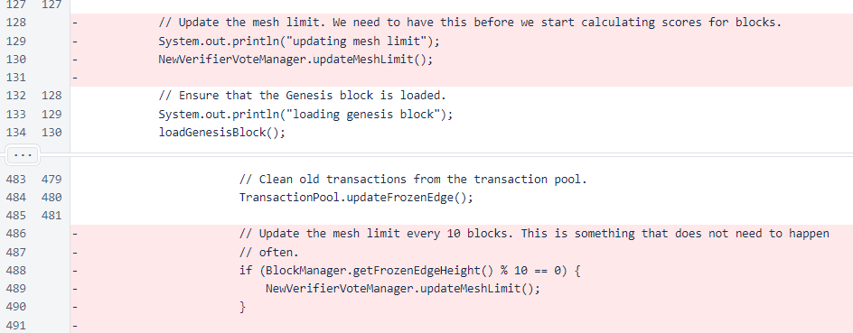

Nyzo version 486 (commit on GitHub) removes the cycle limit from the verifier.
This version does not affect either the sentinel or the verifier in a significant way. It only removes dormant verifier functionality to eliminate concerns about centralization.
The rate at which verifiers can be added to the cycle is inversely proportional to the cycle length. When Nyzo was first released, we were unsure how the cycle would behave as the cycle length increased. To allow some control over the growth of the cycle, the (incorrectly named) mesh limit was introduced. While this functionality has been clearly and decisively unused for over a month, and could be disabled easily on individual verifiers from day 1, it is now being removed entirely to eliminate potential concerns about centralization.
In the NewVerifierVoteManager class, the meshLimit variable was removed. A more appropriate name for this variable would have been cycleLimit.
Also in this class, the method that fetched the limit from the Nyzo web server was removed.
In the topVerifiers() method of the same class, the condition that considered the limit was removed. Exceeding the limit would cause the list of top new verifiers to be empty, which would prevent acceptance of blocks produced by new verifiers in most cases.
In the Verifier class, calls to update the limit were removed.
